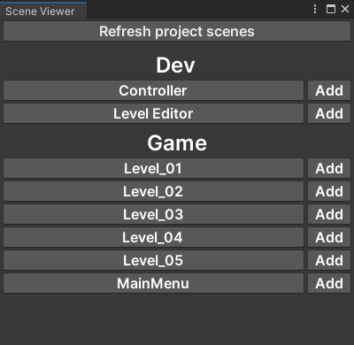

The scene viewer window allows you to quickly navigate between your scenes.
Open the scene viewer window with "Window > General > Scene Viewer".
All the scenes in your "Asset/Scenes" folder will be displayed in the window.
- Click on a scene name to open it.
- Click on the "add" button to open a scene additively.
- If the scene viewer did not automatically refresh your scenes, click on the "Refresh project scenes" button.
